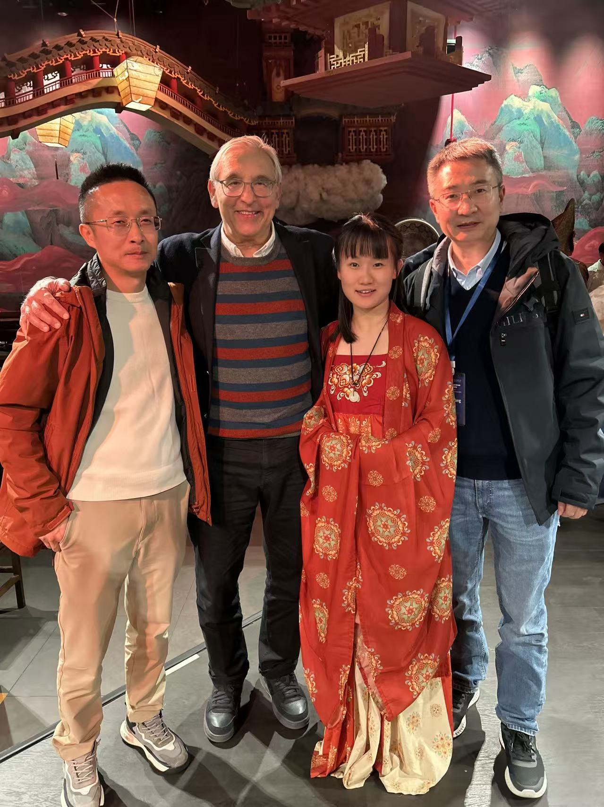

Cosmic web & topology
How do connections, loops and voids encode the physics of the Universe? I use persistent homology to study cosmic structure and neutrino mass.
王佳琪 Cosmologist / A curious explorer
PhD researcher · Shanghai Jiao Tong University
Research visit · Institute for Computational Cosmology, Durham University
I study large-scale structure through cosmic-web topology and weak gravitational lensing, connecting simulations with observations.
Filaments connect into a large-scale cosmic network.
What information hides in the apparently empty Universe? My research connects large-scale structure, persistent homology and weak gravitational lensing to study the imprints of dark matter and neutrinos.
How do connections, loops and voids encode the physics of the Universe? I use persistent homology to study cosmic structure and neutrino mass.
Weak lensing connects observed galaxies to the underlying matter distribution: halo masses, boundaries and the environments around groups and clusters.
Observations and simulations provide complementary views of the galaxy–halo connection, matter-field reconstruction and survey selection effects.
Using persistence strips to extract information across scales and environments, probing neutrino mass through the topology of the cosmic web.
arXiv:2604.02300Measuring dark matter halo properties and halo mass functions using the weak-lensing signals of galaxy groups and clusters.
Read the paperThese collaborations connect observational surveys with simulations: measuring gravitational lensing in different ways, reconstructing dark matter fields, linking galaxies to their haloes, and testing how groups and clusters are selected.
My interest in AI begins with a familiar question from scientific research: what makes an explanation worth believing?
When a model gives the right answer, has it understood the problem? When information can be decoded from an internal state, does the model actually use it? Can that understanding support reliable decisions when evidence is incomplete, the environment changes, or resources are limited?
I explore these questions through controlled model experiments, scientific evaluation design and an astronomical observing agent. These notes document results, failures and counterexamples that have made me revise my explanations.
Experimental research · World models & uncertainty
Identical mean predictions can conceal different beliefs about the world. In a controlled dynamical environment, I examine whether a model retains the information needed for future judgments, and whether it preserves multiple explanations when the evidence is incomplete. An exact Bayesian reference and matched-mean, different-posterior examples help expose what average prediction accuracy misses.
Current boundary: increasing capacity did not produce stable gains in the tested settings; causal use of internal information remains unresolved.
Experimental research · Modular arithmetic & interventions
Decoding a variable or changing an output does not by itself identify the mechanism of natural computation. My modular-addition experiments moved from topological diagnostics to stricter operand-recombination controls: can a model combine one operand from each of two examples to compute a genuinely new answer?
Current boundary: the tested constrained edits did not establish reliable recombination. This does not prove that operand representations are absent or that all interventions must fail.
Methodological reflection · Scientific benchmarks
A reference solution can earn full marks while a task leaves little room for independent scientific judgment. Through designing and revising research-agent tasks, I ask whether the available evidence distinguishes competing explanations, whether shortcuts bypass the scientific question, and whether scoring rewards judgment rather than adherence to a prescribed procedure.
Current boundary: these are benchmark-design cases and lessons, not a claim that every candidate task has passed independent validation.
Engineering practice · Astronomical observing agents
An observing agent must decide what information to acquire next, how to allocate limited telescope time and computation, and when unexpected feedback should change its plan. I use observing windows, exposure requirements and fibre constraints to explore how scientific reasoning becomes a sequence of decisions.
Current boundary: this is a system-development case; it does not establish real-telescope deployment or universal performance advantages.
What information a model retains, how it uses that information, how we test that use, and how it revises its judgments through action.
Translating large-scale structure into music: halos become harp notes, filaments become strings, and voids find their voice in cellos. A different sense for the same Universe.
Explore the sonification projectI’m a PhD researcher in astronomy at Shanghai Jiao Tong University, with a joint research visit at Durham University’s Institute for Computational Cosmology (ICC). At Durham, my research has focused on cosmic-web topology and neutrino mass using the FLAMINGO simulations.
Away from astronomy, I enjoy rowing, stand-up paddleboarding and kayaking, as well as hiking, badminton and table tennis. Philosophy is another lasting interest; I minored in it as an undergraduate.
Download academic CV (PDF) Find me on GitHub
From assisting university physics classes to astronomy talks for school students, I enjoy making abstract ideas understandable and open to discussion.
Cosmology, AI, science and art — or simply an interesting question. I’d love to hear from you.
我是一名天文学博士研究生，就读于上海交通大学，曾赴英国杜伦大学计算宇宙学研究所（ICC）联合培养。我的研究围绕宇宙大尺度结构、持续同调和弱引力透镜展开，尝试从宇宙网的形状中提取有关暗物质和中微子的信息。
在科研之外，我关注 AI 如何参与科学思考，也通过宇宙网声化、拓扑科普和科学写作探索不同的表达方式。我喜欢赛艇、桨板、皮划艇和徒步，也打羽毛球与乒乓球；哲学是我持续的兴趣，本科期间曾辅修哲学。欢迎就宇宙学、AI、科学艺术，或任何有趣的问题与我交流。
jqwang.735@gmail.com